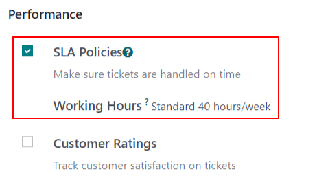
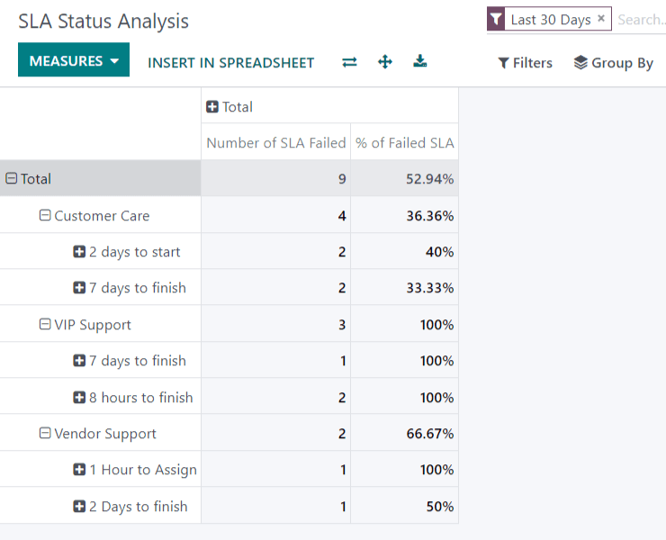

Acuerdos de nivel de servicio (SLA)¶
Un acuerdo de nivel de servicio (SLA) define el nivel de servicio que un cliente puede esperar de un proveedor. Estos acuerdos proporcionan un plazo que indica a los clientes cuándo pueden esperar resultados y ayudan a que el equipo de soporte alcance sus objetivos.
Crear una nueva política de SLA¶
Para crear una nueva política de acuerdos de nivel de servicio vaya a la página del equipo en . Seleccione un equipo, baje a la sección Rendimiento y seleccione la casilla a lado de Políticas SLA para habilitarlas para ese equipo en específico.
Nota
El valor que aparece en el campo horas laborables se utiliza para determinar la fecha límite de las políticas SLA. De forma predeterminada, se determina mediante el valor establecido en el campo horas laborables de la empresa en .
Para crear una nueva política, haga clic en el botón inteligente en la página de ajustes del equipo o vaya a y haga clic en Nuevo. Agregue un título y una descripción para la nueva política y complete el formulario siguiendo los pasos a continuación.
Definir los criterios de una política SLA¶
La sección criterios se utiliza para identificar a qué tickets se aplicará esta política. Complete los siguientes campos para ajustar los criterios de selección:
Equipo: la política solo se puede aplicar a un equipo. Este campo es obligatorio.
Prioridad: el nivel de prioridad de un ticket se identifica al seleccionar el número de estrellas que representa la prioridad en la tarjeta de kanban o en el ticket. El acuerdo de nivel de servicio solo se aplicará una vez que se actualice el nivel de prioridad en el ticket para que coincida con el criterio del SLA. Si no se selecciona nada en este campo, esta política solo se aplicará a los tickets de
baja prioridad(cero estrellas).Tipos: los tipos de ticket pueden ser útiles para indicar cuando un ticket es una pregunta de cliente que se puede responder con rapidez, o un problema que puede necesitar investigación más profunda. Se pueden seleccionar varios tipos de ticket en este campo. Si no se selecciona nada, esta política aplica a todos los tipos de ticket.
Etiquetas: las etiquetas se aplican para indicar brevemente de qué trata el ticket. Se pueden aplicar varias etiquetas a un solo ticket.
Clientes: se pueden seleccionar tanto contactos de individuos como de empresas en este campo.
Artículos de la orden de venta: este campo está disponible solo si se habilita la aplicación Hojas de horas para un equipo. Esto permite vincular el ticket directamente con una línea específica de una orden de venta, la cual se debe indicar en el campo artículo en la orden de venta del ticket.
Nota
A menos que se indique lo contrario, se pueden hacer varias selecciones en cada campo. (Es decir, se pueden incluir varias etiquetas en una política, pero solo un nivel de prioridad).
Establecer un objetivo para una política SLA¶
El objetivo es la etapa a la que un ticket debe llegar y el tiempo asignado para llegar a dicha etapa para satisfacer la política del acuerdo de nivel de servicio. En el campo llegar a la etapa se puede seleccionar cualquier etapa asignada a un equipo. El tiempo dedicado a etapas seleccionadas en el campo excluir etapas no se incluirá en el cálculo de la fecha límite del SLA.
Example
Un SLA con el nombre 8 horas para cerrar lleva el registro del tiempo de trabajo antes de completar un ticket y tendría que llegar a la etapa Resuelto. Sin embargo, si el SLA tiene como nombre 2 días para iniciar, lleva seguimiento del tiempo de trabajo antes de empezar a trabajar en un ticket y tendría que llegar a la etapa En progreso.
Cumplir con las fechas límites de SLA¶
Una vez que se determina que un ticket cumple con los criterios de una política SLA, se calcula una fecha límite. La fecha límite se calcula según la fecha de creación del ticket y el objetivo de horas de trabajo. La fecha límite se agrega al ticket, así como una etiqueta blanca que indica el SLA.
Importante
Si un ticket cumple los criterios de más de un SLA, aparecerá la fecha límite más cercana en el ticket. Una vez que pase esa fecha límite, aparecerá la siguiente.
Una vez que un ticket cumpla una política SLA, la etiqueta del SLA se vuelve de color verde, y el campo fecha límite desaparece.

Si se alcanza la fecha límite del acuerdo de nivel de servicio y el ticket no ha pasado a la etapa objetivo, la etiqueta del SLA se vuelve de color rojo. Una vez que no se cumplió el SLA, la etiqueta roja permanecerá en el ticket incluso después de mover el ticket a la etapa objetivo.

Analizar el rendimiento del SLA¶
El reporte de análisis del estado del SLA lleva el registro de qué tan rápido se cumple un SLA, así como la tasa de éxito de políticas individuales. Puede acceder al reporte y a su respectiva tabla dinámica desde .
Utilizar la vista de tabla dinámica¶
De forma predeterminada, el reporte se muestra en una vista de tabla dinámica y se filtra para mostrar el número de SLA fallidos y la tasa de fallos en los últimos 30 días, agrupados por equipo.
Para agregar el número de SLA aprobados o en curso, haga clic en el botón Medidas para mostrar un menú desplegable con los criterios para reporte y elija entre las opciones disponibles según las medidas que prefiera. Cada que selecciona una, aparecerá una marca de verificación en el menú desplegable para indicar que está incluida, luego aparecerá una nueva columna correspondiente en la tabla dinámica para mostrar los cálculos pertinentes.
Para agregar un grupo a una fila o columna, haga clic en el botón más + junto a Total y después seleccione uno de los grupos. Para quitar uno, haga clic en el botón menos - y deseleccione.
Utilizar la vista de gráfico¶
El reporte Análisis de estado también se puede ver como un gráfico de barras, líneas o circular y puede alternar entre estas vistas, seleccione el icono correspondiente en la parte superior.
Truco
Tanto el gráfico de barras como el gráfico de líneas se pueden visualizar de forma apilada, la cual presenta dos o más grupos uno encima del otro, en lugar de uno junto al otro, lo que facilita la comparación de datos.
Utilizar la vista de cohorte¶
La vista de cohorte se utiliza para realizar un seguimiento de los cambios en los datos durante un período de tiempo. Para mostrar el reporte Análisis del estado en una vista de cohorte haga clic en el icono en la esquina superior derecha sobre el gráfico.